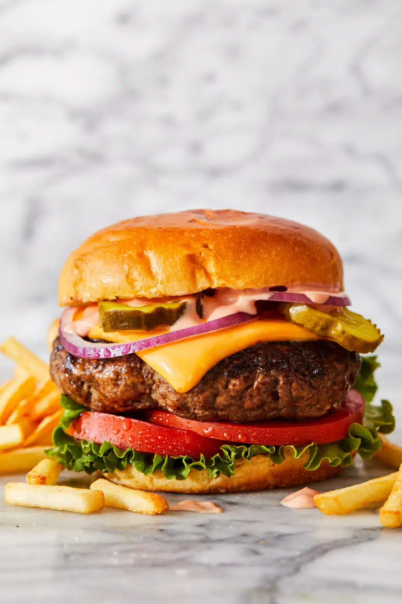

Cheeseburger recipe

Description
Quick and easy cheesburger recipe that anybody can make at home with minimal effort.
Ingredients
- 2lbs 80/20 minced beef
- 1 tablespoon olive oil
- 6 slices american cheese
- 1/2 cup mayonnaise
- 1/4 cup ketchup
- Brioche burger buns
- Shredded lettuce
- Tomato
Steps
- In a large bowl, combine beef, 1 1/2 teaspoons salt and 1 1/2 teaspoons pepper. Using a wooden spoon or clean hands, stir until well combined. Gently form into 6 1-inch-thick patties, just slightly larger than the burger buns.
- Heat canola oil in a large cast iron skillet over medium high heat. Working in batches, add patties and cook until lightly charred or until desired doneness, about 3-5 minutes per side; top with cheese.
- Serve immediately in hamburger buns with burger sauce and desired toppings.
Home